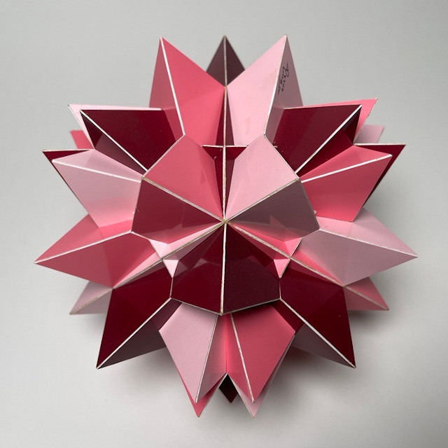

Compound of Twelve Tetrahedra

This is a compound of twelve tetrahedra which has the same symmetry as a cube. Each tetrahedron shares one 2-fold axis with a 2-fold axis of the compound. It is a rigid compound, which means there is no other compound of twelve tetrahedra with this symmetry where each tetrahedron shares one 2-fold axis with a 2-fold axis of the final compound.
However there is an infinite set compounds of twelve tetrahedra with the same symmetry as this one, where each tetrahedron shares a 2-fold axis with a 4-fold axis. Such a compound isn't rigid; each tetrahedron, or actually each pair of tetrahedra, can be rotated around such a shared axis. Interesting enough when I searched the internet for a compound of twelve tetrahedra I found one special angle in this set, instead of the one that is shown here.
This model is a bit less than 18 cm in diameter, which is around 7 inches and it was finished in June 2023.
Links
- Thumbnails
- Page with interactive models of compounds of Tetrahedra
- Teun's Polyhedra
- Home
Last Updated
2024-04-09